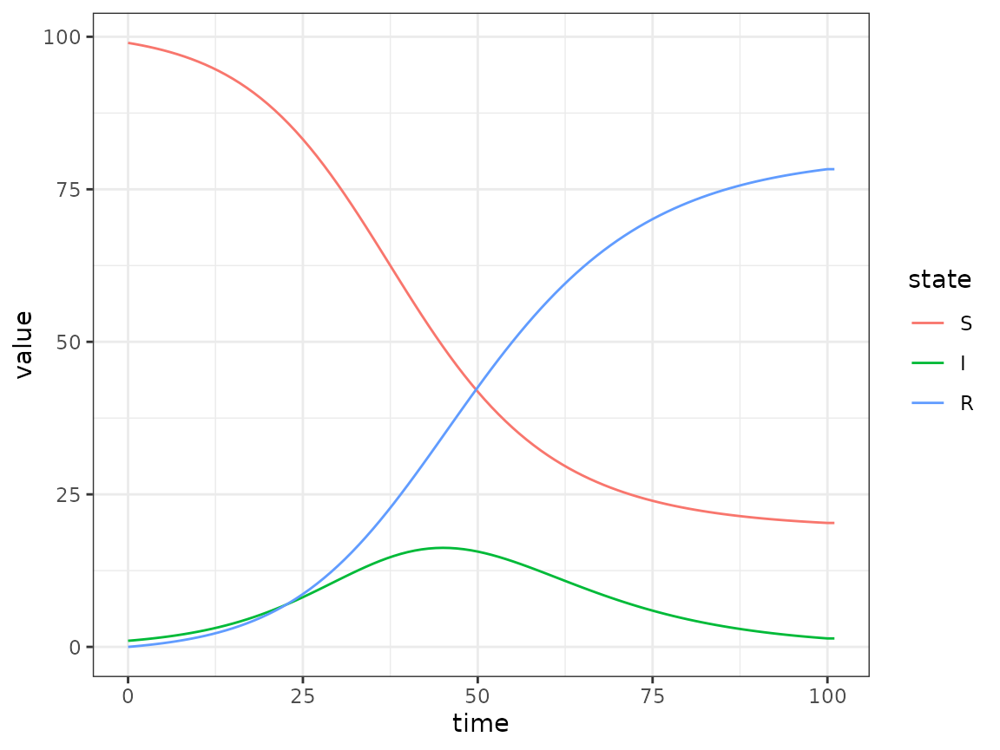

Quickstart Guide: specifying and simulating a simple compartmental model
Source:vignettes/quickstart.Rmd
quickstart.RmdThis quickstart guide is meant to show a new user how to specify and
simulate a simple compartmental model in macpan2.
macpan2 is extremely flexible in how models are
specified, and so there can be several equivalent ways of specifying the
same model. This feature is important to keep in mind when trying to
understand or build more complicated models, such as the one
demonstrated in Quickstart Guide, part 2 (see
vignette('quickstart2', package = 'macpan2')).
Model Definition Files
Models are defined by a set of four model definition files, all housed in the same directory:
model_name
├── variables.csv
├── derivations.json
├── settings.json
└── flows.csvInstallations of macpan2 contain several starter
models:
list.files(system.file("starter_models", package = "macpan2"))
#> [1] "age" "macpan_base" "seir" "seir_simplified"
#> [5] "seir_symp" "seir_symp_vax" "seir_vax" "SI_products"
#> [9] "sir" "testing" "vax"TODO: add a link to a reference doc with short descriptions of each starter model… also write this doc :) ideally it would have diagrams to illustrate each model
The simplest is an SIR model, which can be found in this directory:
print(sir_dir <- system.file("starter_models", "sir", package = "macpan2"))
#> [1] "/home/runner/work/_temp/Library/macpan2/starter_models/sir"IP: before getting into the files below, it would be worth showing the user a diagram of the model (and especially if there’s a diagram utility, it could be demonstrated here)
(BB: do we want this? Start a macpan_helpers
package?)
In this article, we work through the specification and simulation of the SIR sample model.
variables.csv
variables.csv includes a list of the model
variables:
#> Epi
#> S
#> I
#> R
#> N
#> beta
#> foi
#> gamma(The first row of this file is a header row, which classifies the variables below. More on this later.)
In macpan2, we use “variables” as a general term to
refer to
-
state variables, such as:
-
S: the number of susceptible individuals at each point in time -
I: the number of infectious individuals -
R: the number of removed individuals
-
-
parameters, such as:
-
beta: the contact rate (transmission per time per susceptible per infective) -
gamma: the per-capita recovery rate of infectious individuals
-
-
derived variables, to be calculated using state
variables and/or parameters, such as:
-
N: population size, calculated by summing all of the state variablesS + I + R -
foi: the force of infection,beta * I / Nin this model
-
Formulas for the derived quantities are defined in derivations.json.
In simple models like this one, variables.csv is a
single-column .csv file. The header row contains one column
name, Epi, which labels the variables below it as
epidemiological variables. Such variable category labels, or
variable partitions, aren’t useful for simple models
like the basic SIR, which have only a single variable category. However,
partitions are essential as part of “product”
models that combine multiple model structures into more complex
models (for example, an SEIR model where the infectious class is divided
by level of symptoms: see
vignette('quickstart2', package = 'macpan2').
derivations.json
derivations.json includes expressions for computing
derived variables:
#> [
#> {
#> "output_names" : ["N"],
#> "simulation_phase" : "before",
#> "arguments" : ["S", "I", "R"],
#> "expression" : "sum(S, I, R)"
#> },
#> {
#> "output_names" : ["foi"],
#> "simulation_phase" : "during_pre_update",
#> "arguments" : ["I", "beta", "N"],
#> "expression" : "I * beta / N"
#> }
#> ]In this example, the derived variables are the total population size,
N, and the force of infection, foi. Each
derived variable is defined in a JSON object. Each such
JSON object will contain several key-value pairs. Here the keys are:
-
output_names: the name(s) of the derived variable(s); in this simple model, each JSON object only defines a single derived variable -
simulation_phase: the phase during which this derived variable is calculated; here we have-
"before", which means the variable is calculated from the initial variable values, before the simulation begins -
"during_pre_update", which means the variable is calculated at each simulation step, before the state variables are updated for the next time step
-
-
arguments: an array of the variables (delimited by brackets[]) used to calculate the derived variable -
expression: a string storing a mathematical expression used to calculate the derived variable using thearguments
The keys described above have more options; supplementary keys are
used for defining more complicated models. These are fully catalogued in
the model
definitions article. Mathematical operations and functions available
to use in the expression string are listed in the engine
functions reference article.
(BB: is it worth mentioning that (1) we could have defined
foi as beta*I/(S+I+R), but that (a) it would
be harder to read and (b) it would be less efficient since we would be
computing N at every time step? and (2) that in a model
where N varied over time we would need to compute
N “during_pre_update” rather than “before”? Or are these
unnecessary details at this stage?)
settings.json
settings.json gives information about how to interpret
the variables defined in variables.csv.
IP: the old version of this paragraph started with
The next file is
settings.json, which has information about how to interpret the variables and flows. In simple models like this, the two relevant fields are a list of state variables (those that can appear in the from and to columns of flows.csv) and another list of flow variables (those that can appear in the flow column of flows.csv).
IP: I’ve tried to simplify this by saying that
settings.json gives info about variables in
variables.csv (as opposed to additionally referring to
flows.csv), and that’s also why I’ve put this section
directly after variables.csv. While it’s possible to just
reference variables in variables.csv to explain
settings.json for this atomic model, I’m not sure if it
also holds true for product models, but I think it’s OK if we gloss over
that here.
#> {
#> "required_partitions" : ["Epi"],
#> "null_partition" : "Null",
#> "state_variables" : ["S", "I", "R"],
#> "flow_variables" : ["foi", "gamma"]
#> }This file contains a single JSON object, with several key-value pairs. The mandatory keys are:
-
required_partitions: an array of variable partition names (from the header row of variables.csv) required to uniquely identify each variable -
null_partition: leave this entry as"Null"; this key may be used to expandmacpan2’s functionality in the future, but it is currently unused -
state_variables: an array of state variables -
flow_variables: an array of flow variables
flows.csv
flows.csv defines flows between state variable
compartments:
#> from ,to ,flow ,type
#> S ,I ,foi ,per_capita
#> I ,R ,gamma ,per_capitaThis file also starts with a header row, including the following columns:
-
from: the name of the compartment where the flow comes from -
to: the name of the compartment where the flow goes to -
flow: the variable name storing the value of the flow rate -
type: the type of the flow
(BB: “origin” and “destination” compartments instead of “where the flow (comes from|goes to)”? or is that too fancy?)
Here, the flow type is per_capita: i.e., the flow at
time step \(t+1\) will equal
flow times the number of individuals in the
from compartment at time \(t\). In the example above, the flow from
S to I equals foi * S (referring
back to the derivations file, this is equal to
beta * S * I/ N).
All available flow types are given in the model definitions article.
Getting Model Definitions into R
Once we have a directory that completely defines a compartmental
model, the definition can be loaded into R using the
Compartmental function.
sir = Compartmental(sir_dir)This sir object contains several methods for working
with the model. The most important of these is the
simulators_tmb method, which is described in the next
section.
Numerical Inputs
The model definition does not contain any numerical quantities and so
it is not sufficient for running a simulation. The
$simulators$tmb method allows you to create a model engine,
which can be used to run simulations, by specifying numerical values for
key quantities. Here we specify an engine called
sir_simulator by providing the following information.
-
time_steps– How many time steps should the epidemic simulator run for? -
state– A named vector containing the initial values of the state variables defined insettings.json. -
flow– A named vector containing the values of the flow variables defined insettings.json. -
...– Any other named variables that are required for your model definition, i.e. quantities used in the model that are not defined inderivations.json. In this examplebetaandNare required.
Simulation
To generate simulations from the simulator, use the
report method. The results come out in long
format and always have the same columns.
(BB: I know the wikipedia page says “wide and narrow”, but “long format” seems more common IME.)
sir_simulations = sir_simulator$report()
head(sir_simulations, 9)
#> matrix time row col value
#> 1 state 0 S 99.000000
#> 2 state 0 I 1.000000
#> 3 state 0 R 0.000000
#> 4 state 1 S 98.802000
#> 5 state 1 I 1.098000
#> 6 state 1 R 0.100000
#> 7 state 2 S 98.585031
#> 8 state 2 I 1.205169
#> 9 state 2 R 0.209800All variables in the simulations are matrix
valued – even ordinary numbers are stored as 1-by-1 matrices. The
first column in the output gives the name of the matrix being returned.
Here we see the default behaviour of returning only the state matrix (or
vector). This can be modified with the .mats_to_save and
.mats_to_return arguments to the
$simulators_tmb method (TODO: clean up and point to
documentation). (BB: not entirely clear …)
The second column, time, gives the time step being
reported. The third and fourth columns give the row and column
identifiers within each reported matrix (in this example there is only
one reported matrix, state, and our column identifier is
filled with blanks since our state matrix has only one
row). The final column gives the simulated values.
Processing Results
There are no plotting tools in macpan2. The philosophy
is to focus on the engine and modelling interface. We are not going to
do better than ggplot2 at plotting, for example, so we
format the output so that it can be easily manipulated in
ggplot2. For example:
(sir_simulations
|> ggplot()
+ geom_line(aes(time, value, colour = row))
)
Similarly, if you want to convert the long-format data to wide format, you can use standard R tools:
(sir_simulations
## drop 'matrix' (has only a single value) and 'column' (blank)
|> dplyr::select(-c(matrix, col))
|> tidyr::pivot_wider(id_cols = time, names_from = row)
|> head(3)
)
#> # A tibble: 3 × 4
#> time S I R
#> <int> <dbl> <dbl> <dbl>
#> 1 0 99 1 0
#> 2 1 98.8 1.10 0.1
#> 3 2 98.6 1.21 0.210(BB: any further examples here, or is this enough?)